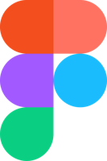
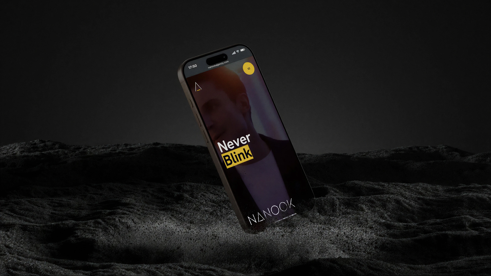
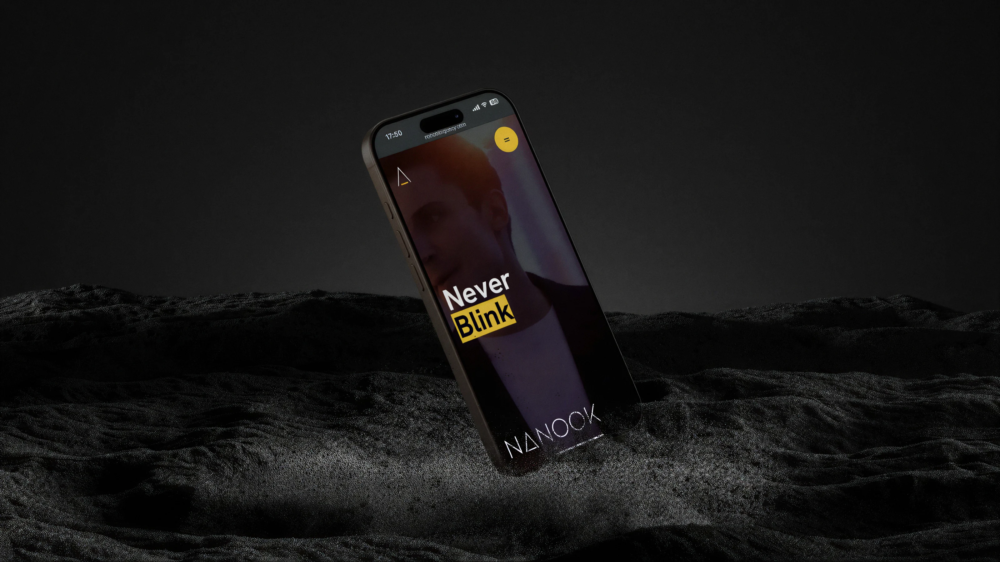
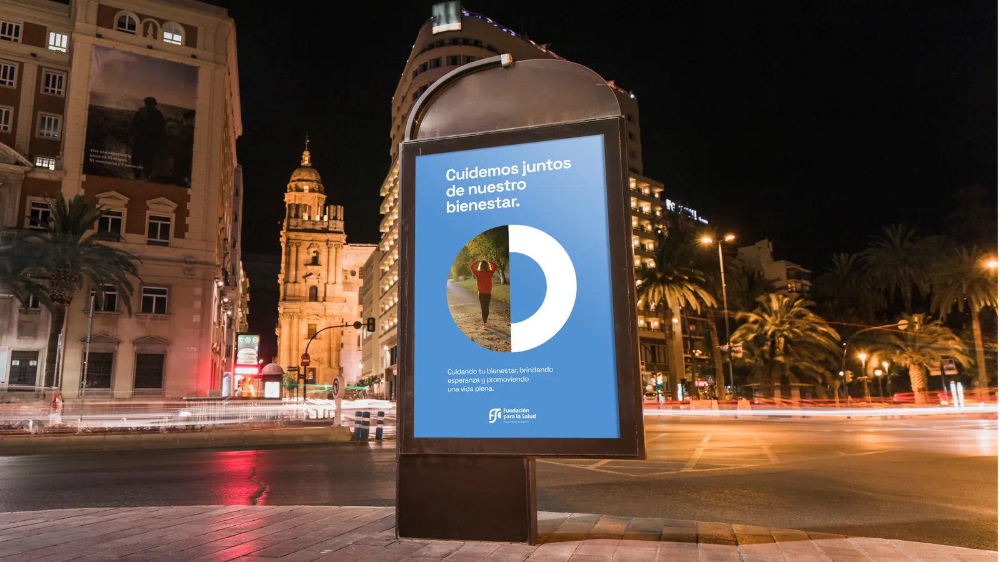

Restyling de la web de Nanook, agencia de eventos y experiencias de marca. La diseñé en Figma como un sitio oscuro y en constante movimiento, donde cada transición entra en escena como en uno de sus eventos. Never blink.

Figma
La home es un slider de vídeos a pantalla completa. Sobre ellos, los claims de la marca —True Emotions, Because We Care— se escriben letra a letra sobre un bloque amarillo.
Los casos se recorren como una galería: una rejilla de imágenes con titulares que aparecen al pasar y, dentro de cada proyecto, su vídeo, el título en amarillo y una secuencia de fotos que avanza con el scroll.
Diseñé la web para que se adapte a cualquier pantalla: la rejilla de casos pasa a una sola columna, los titulares escalan sin perder fuerza, el menú se simplifica y los vídeos se reencuadran en vertical. En el móvil se ve y se recorre igual de bien que en el escritorio.

Todo el proyecto se trabajó en Figma: sistema de componentes, pantallas de escritorio y móvil y prototipos de las transiciones para definir el movimiento antes de pasar a desarrollo.
Una web que se mueve como la agencia: inmersiva, con ritmo y con los casos como protagonistas.
